경상남도교육청 교육연수원 행복특강 · 2026.11.26 · 김덕진
AI가 동료가
되는 시대
강의 화면에서 본 것을 그대로 따라 하는 페이지입니다. 문장을 고르고, 복사해서, AI에 붙여 넣으세요. 챗GPT 무료 계정이면 충분합니다.
오늘 딱 하나
내일의 한 줄, AI에게 맡겨 보세요
내 자리를 고르면 문장이 채워집니다. 복사해서 챗GPT에 붙여 넣으세요.
나는
[ ] 자리는 직접 고쳐 써도 됩니다. 실제 이름, 연락처, 학생 정보는 넣지 않습니다.
일터에서
요청하고, 결과를 확인하고, 고치게 합니다. 강의에서 본 화면 그대로입니다.
① 요청: 네 줄을 붙입니다
목표 · 조건 · 형식 · 기준 네 줄이 결과의 절반을 정합니다.
② 결과 확인: 원문과 대조시킵니다
네가 쓴 글을 원문과 대조해 줘. 날짜·장소·전화번호가 원문과 같은지, 네가 덧붙이거나 뺀 내용이 있는지 표로 보여 줘.
- AI가 만든 대조표도 틀릴 수 있습니다. 날짜와 전화번호는 내 눈으로 한 번 더 봅니다.
③ 수정: 고칠 곳만 콕 집습니다
좋아. 두 가지만 고쳐 줘. 첫째, 이모지는 빼 줘. 둘째, 맨 아래에 학부모 단체 문자로 보낼 세 줄 요약을 덧붙여 줘.
제목을 더 짧게, 한 줄로
어려운 낱말이 남았으면 쉬운 말로 바꿔 줘
- '더 잘 써 줘'보다 '이것과 이것을 고쳐 줘'가 잘 통합니다.
- 보내기 버튼은 사람이 누릅니다.
강사가 실제로 한 화면 보기
그림을 누르면 크게 볼 수 있어요.
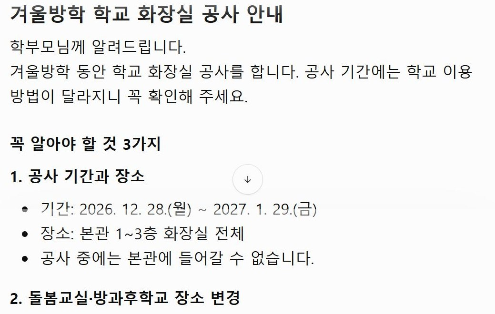
① 9초 뒤에 나온 초안. 날짜 · 장소 · 전화번호는 그대로이고 문장이 짧아졌습니다.
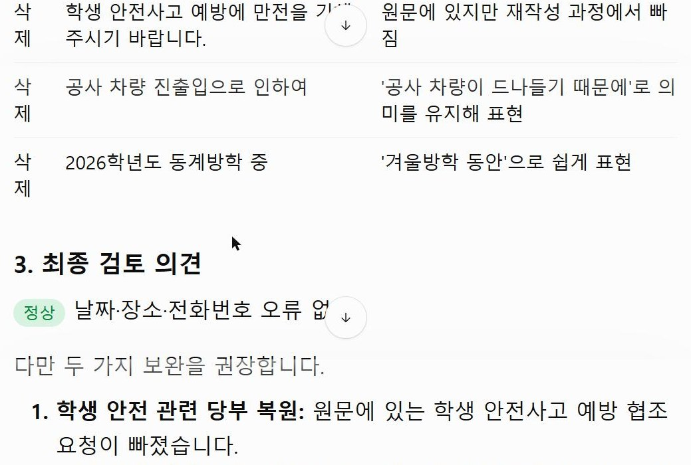
② 대조를 시켰더니. 원문의 '학생 안전사고 예방' 당부가 빠진 것을 AI가 스스로 찾았습니다.
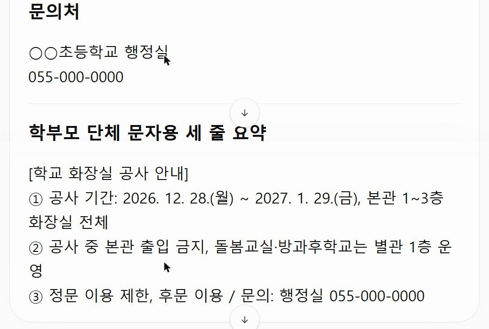
③ 고친 뒤. 단체 문자로 보낼 세 줄 요약이 붙었습니다.
챗GPT 무료 계정 · 임시 채팅 · 2026년 11월 25일 강사 실행 · 학교와 연락처는 가상
2
빈 종이 대신 안내문 초안
어디서: 챗GPT · 무료
따라 할 문장
[ ] 자리는 내 학교 내용으로 고쳐 쓰세요. 모르는 것은 빈칸으로 남기게 합니다.
받은 초안에서 꼭 볼 두 곳
- 틀린 곳. 강의 화면의 초안은 제목에 '2027학년도'라고 썼습니다. 2027년 1월의 겨울방학은 2026학년도입니다. 연도 · 요일 · 금액은 내 눈으로 확인합니다.
- 빈칸. [ ]로 남은 곳은 담당자가 채웁니다. 빈칸을 그럴듯하게 메워 달라고 하지 않습니다.
강사가 실제로 한 화면 보기
그림을 누르면 크게 볼 수 있어요.
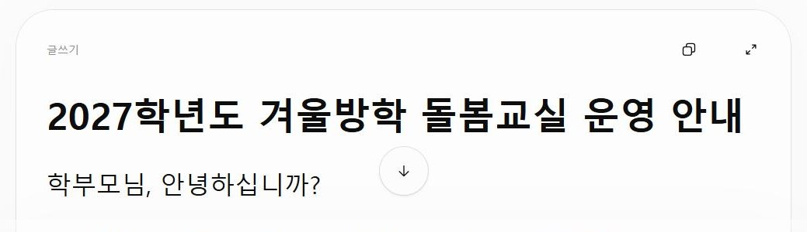
틀린 곳 찾기. 제목의 '2027학년도'는 AI가 넘겨짚은 것입니다. 학교 일을 아는 사람만 잡아냅니다.
챗GPT 무료 계정 · 임시 채팅 · 2026년 11월 25일 강사 실행 · 학교와 연락처는 가상
3
행사 준비 체크리스트
어디서: 챗GPT · 무료
따라 할 문장
이렇게 하면 됩니다
- 첫 줄에 내가 누구인지를 먼저 씁니다. 그래야 내 자리의 일만 골라 옵니다.
- 맨 아래 '내가 확인할 것'을 따로 받으면 AI가 모르는 우리 학교 사정이 보입니다.
- 체크리스트는 출발점입니다. 학교 안전 매뉴얼과 교육청 지침이 먼저입니다.
강사가 실제로 한 화면 보기
그림을 누르면 크게 볼 수 있어요.
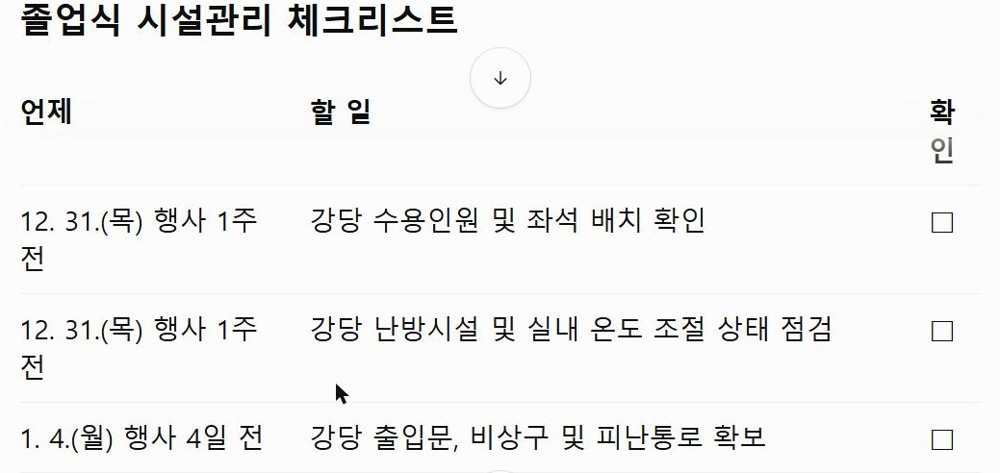
졸업식 일주일 전부터. 난방 · 비상구 · 소방시설처럼 시설 담당의 일을 날짜별로 나눠 줬습니다.
챗GPT 무료 계정 · 임시 채팅 · 2026년 11월 25일 강사 실행 · 학교와 연락처는 가상
4
같은 전화에 같은 대답
어디서: 챗GPT · 무료
이렇게 하면 됩니다
- '학교마다 다른 내용은 확인 후 안내' 줄을 빼면 AI가 그럴듯한 답을 지어냅니다.
- 알레르기처럼 건강과 이어진 안내는 반드시 영양(교)사 확인을 거칩니다.
- 받은 답변 틀은 초안입니다. 우리 학교 말투와 규정에 맞게 다듬어 씁니다.
강사가 실제로 한 화면 보기
그림을 누르면 크게 볼 수 있어요.
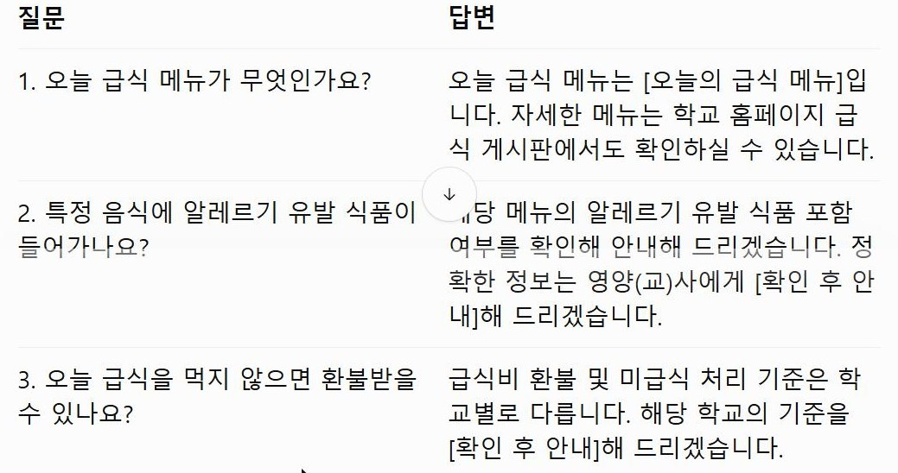
급식실 답변 틀. 알레르기 · 환불은 지어내지 않고 '확인 후 안내'로 남겼습니다.
챗GPT 무료 계정 · 임시 채팅 · 2026년 11월 25일 강사 실행 · 학교와 연락처는 가상
생활에서
목적과 조건을 어떻게 말하느냐에 따라 결과가 달라집니다.
5
여행 계획: 조건을 붙여서
어디서: 챗GPT · 무료
따라 할 문장
한 줄만 보내면 생기는 일
- "부산 여행 계획 짜 줘" 한 줄만 보내면 AI가 일곱 가지를 되묻습니다. 그 일곱 가지가 먼저 말해 줄 조건입니다: 언제, 며칠, 누구와, 무엇을 타고, 무엇을 좋아하고, 얼마를 쓰고, 그 밖에 바라는 것.
- 기차 시간과 영업시간은 AI가 어림한 것입니다. 가기 전에 직접 확인합니다.
강사가 실제로 한 화면 보기
그림을 누르면 크게 볼 수 있어요.
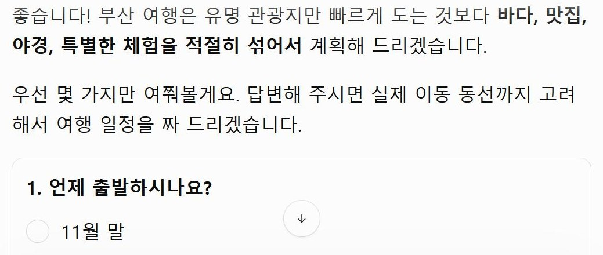
한 줄만 보냈더니. 계획 대신 질문이 돌아옵니다.
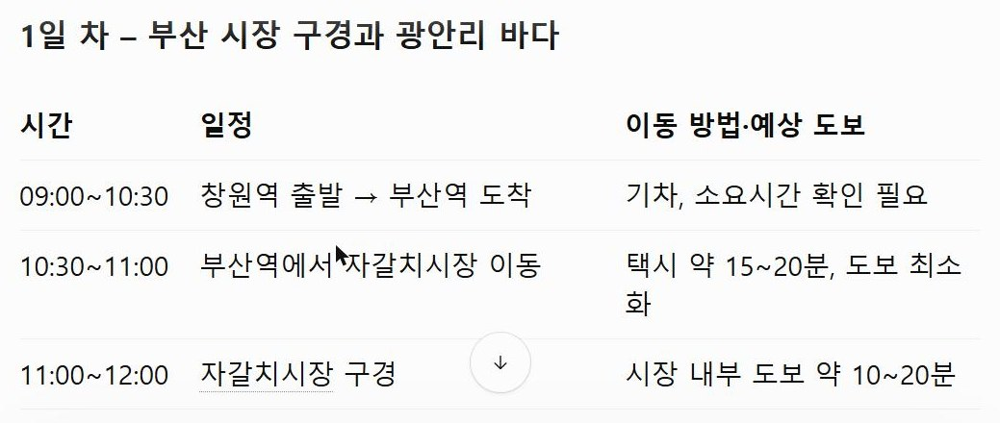
조건을 붙였더니. 바로 시간표가 나옵니다. 기차 소요시간은 '확인 필요'로 남았습니다.
챗GPT 무료 계정 · 임시 채팅 · 2026년 11월 25일 강사 실행 · 학교와 연락처는 가상
6
외국어 연습 상대
어디서: 챗GPT · 무료 · 마이크를 켜면 말로도 됩니다
따라 할 문장
이렇게 하면 됩니다
- 한글로 소리 나는 대로 쳐도 알아듣습니다. 강의에서는 "후타리데스. 라멘 히토츠 쿠다사이"라고만 쳤습니다.
- 틀려도 됩니다. 백 번 틀려도 눈치 주지 않는 연습 상대입니다.
조금 더 천천히, 쉬운 말로 해 줘
방금 배운 문장으로 한 번 더 연습하자
강사가 실제로 한 화면 보기
그림을 누르면 크게 볼 수 있어요.
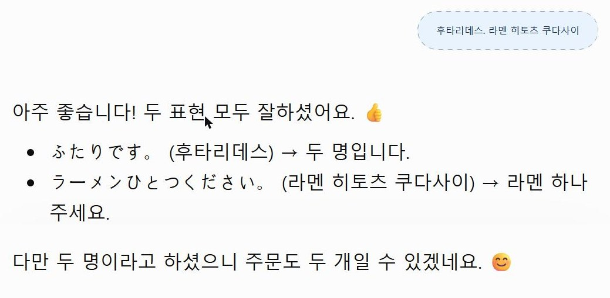
한글로 쳤는데. 알아듣고 뜻을 풀어 준 뒤 다음 질문으로 넘어갑니다.
챗GPT 무료 계정 · 임시 채팅 · 2026년 11월 25일 강사 실행 · 학교와 연락처는 가상
이렇게 하면 됩니다
- 얼마나 자주, 한 번에 몇 분, 몇 주 동안을 말해 주면 따라 할 수 있는 계획이 나옵니다.
- 가격은 '확인 필요'로 받아 두고 살 때 직접 확인합니다.
1회차를 더 자세히, 순서대로 알려 줘
이번 주에 한 것을 말할게. 다음 주 계획을 고쳐 줘
강사가 실제로 한 화면 보기
그림을 누르면 크게 볼 수 있어요.
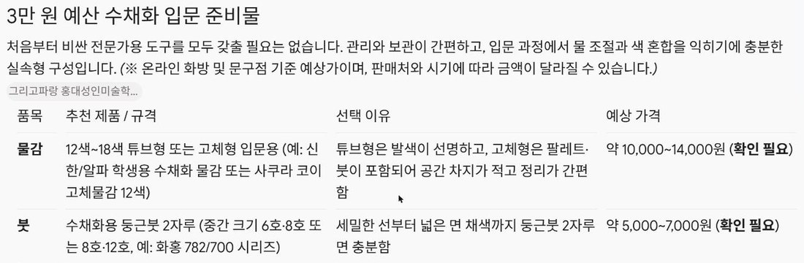
준비물 표. 가격마다 '확인 필요'가 붙었습니다.
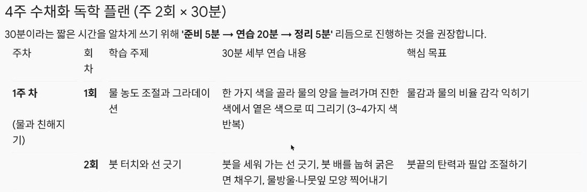
4주 계획. 주 2회, 30분씩 여덟 번으로 나눠 줬습니다.
제미나이 · 2026년 11월 25일 강사 실행
글 쓰는 칸 오른쪽, 버튼 두 개
- 마이크 모양: 누르고 말하면 글자로 받아 적어 줍니다. 내가 한 말을 보고 고칠 수 있습니다.
- 소리 파동 모양: 전화 통화처럼 말로 주고받습니다. 중간에 "아니, 그거 말고" 하고 끼어들어도 됩니다.
마이크를 누르고 그대로 읽어 보세요
답이 마음에 안 들면, 이어서 한마디
더 짧게 세 줄로
더 쉽게 말해 줘
다른 걸로 하나 더
- 식당에서 "덜 맵게 해 주세요" 하듯이 계속 주문하면 됩니다.
- 말로 나눈 대화는 끝나면 채팅에 글로 남습니다. 무료 계정은 음성 대화에 하루 한도가 있습니다.
9
찍어서 물어보기
어디서: 챗GPT 앱 → 입력창 왼쪽 ＋ → 카메라 또는 사진 · 무료
사진을 올리고 이렇게 물어보세요
답을 받으면, 이어서 한마디
모르는 낱말은 풀어서 말해 줘
날짜와 금액은 표로 정리해 줘
내가 지금 해야 할 일만 순서대로
- 약 · 돈 · 계약처럼 중요한 내용은 원문과 한 번 더 맞춰 보세요. 약은 약사님께 다시 확인합니다.
- 주민등록번호와 계좌번호는 가리고 찍습니다. 다른 사람 얼굴이 나온 사진은 올리지 않습니다.
- 무료 계정은 사진 올리기에 하루 횟수 제한이 있습니다. 다 쓰면 내일 다시 됩니다.
10
답 대신 퀴즈 받기
어디서: 챗GPT · 무료 · AI를 과외 선생님으로 씁니다
따라 할 문장
[나이대] 자리는 '60대'처럼 고쳐 쓰세요.
이렇게 하면 됩니다
- 틀려도 됩니다. 틀린 이유를 듣고 내 말로 다시 설명해 보면 내 것이 됩니다.
- 퀴즈가 누르는 카드로 나오면 보기를 누르고, 글로 나오면 번호나 글자로 답하세요.
- AI가 낸 정답도 틀릴 수 있습니다. 돈과 건강이 걸린 내용은 공식 안내와 한 번 더 맞춰 보세요.
한 문제 더, 조금 어렵게
방금 내용을 내가 설명해 볼게. 틀린 데를 짚어 줘
강사가 실제로 한 화면 보기
그림을 누르면 크게 볼 수 있어요.
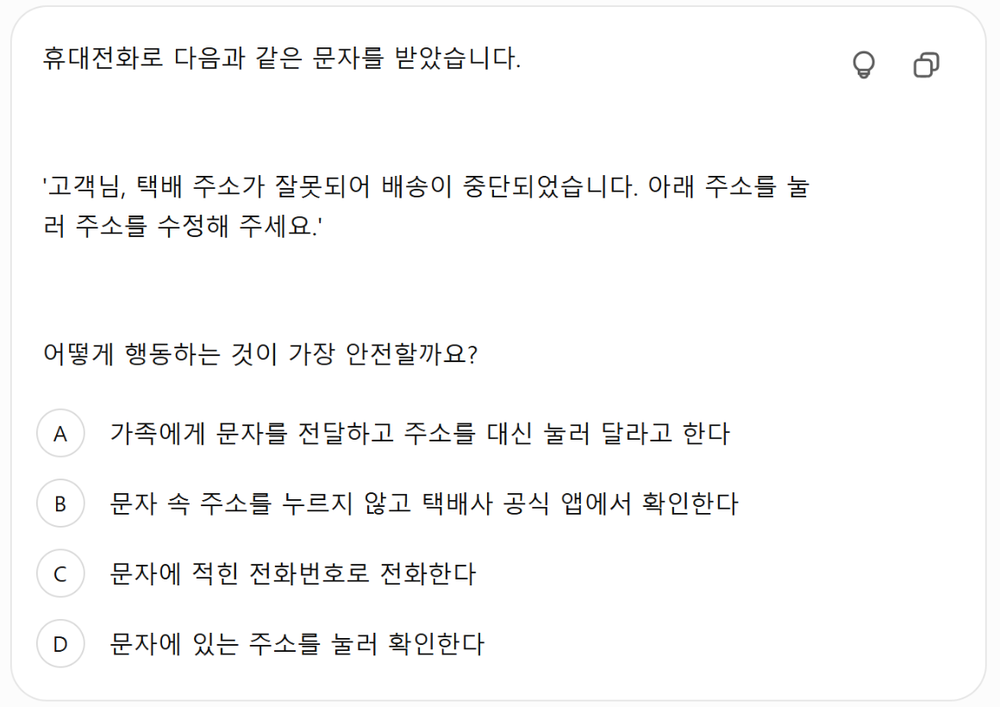
① AI가 낸 퀴즈. 택배 주소를 고치라는 문자를 받았을 때 어떻게 할지 네 가지 중에 고릅니다.
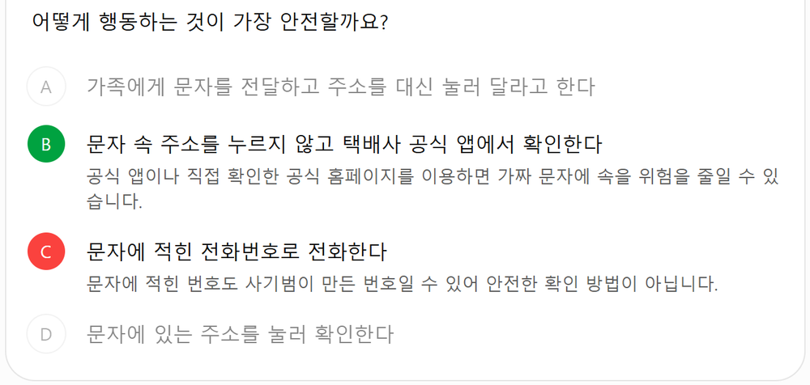
② 일부러 틀려 봤습니다. 정답은 초록, 내가 고른 답은 빨강으로 표시하고 이유를 한 줄씩 알려 줍니다.
챗GPT · 2026년 11월 17일 강사 실행
11
그림 한 장 그려 보기
어디서: 챗GPT · 무료 계정은 하루에 몇 장만 됩니다
따라 할 문장
나온 그림은 말로 고칩니다
색을 조금 더 밝게
해 질 녘 노을로
글자는 빼고
- 무료는 하루 장수가 정해져 있으니 한 장을 정성껏 부탁하세요. 다 쓰면 내일 다시 됩니다.
- 사진은 입력칸 왼쪽 ＋ 버튼으로 올립니다. 다른 사람 얼굴 사진은 올리지 않습니다.
- 포스터 속 날짜·전화번호·QR은 가짜일 수 있습니다. 쓰기 전에 직접 확인하세요.
강사가 실제로 한 화면 보기
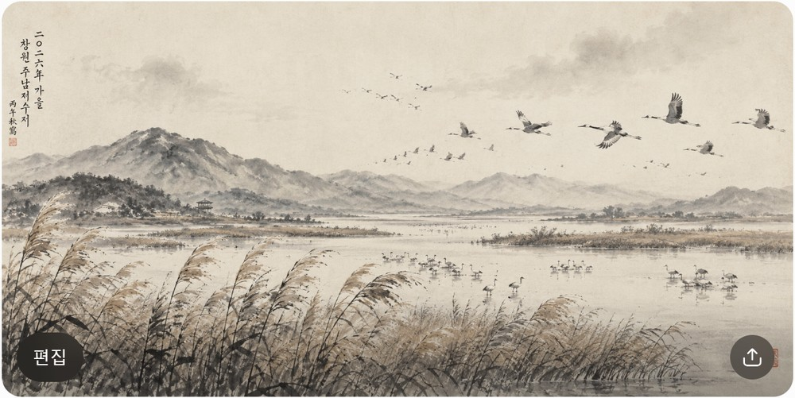
같은 문장으로 그린 결과. 갈대밭과 철새 떼, 왼쪽 위에 '창원 주남저수지' 글씨까지 넣어 줬습니다. AI가 그린 풍경은 실제 모습과 다를 수 있습니다.
챗GPT · 2026년 11월 17일 강사 실행 · 임시 채팅에서는 그림이 그려지지 않으니 일반 채팅에서 하세요
가사는 직접 씁니다
강의에서 들으신 「학교를 돌리는 사람들」의 가사입니다. 우리 학교 이야기로 고쳐 써 보세요.
스타일은 한 줄로
밝은 포크 팝, 통기타, 따뜻한 합창, 한국어 여성 보컬, 응원가
잔잔한 발라드, 피아노, 한국어 남성 보컬
신나는 트로트, 경쾌한 박자, 한국어 보컬
- 가사가 막막하면 챗GPT에 먼저 부탁하세요. "우리 학교 송년회에서 부를 노래 가사를 써 줘. 행정실, 급식실, 돌봄교실 이야기를 넣어서."
- 가사에 실제 이름이나 개인정보는 넣지 않습니다.
- AI로 만든 노래를 행사 밖으로 내보낼 때는 'AI로 만들었다'고 밝혀 둡니다. 요금제마다 쓸 수 있는 범위가 다릅니다.
강사가 실제로 한 화면 보기
그림을 누르면 크게 볼 수 있어요.
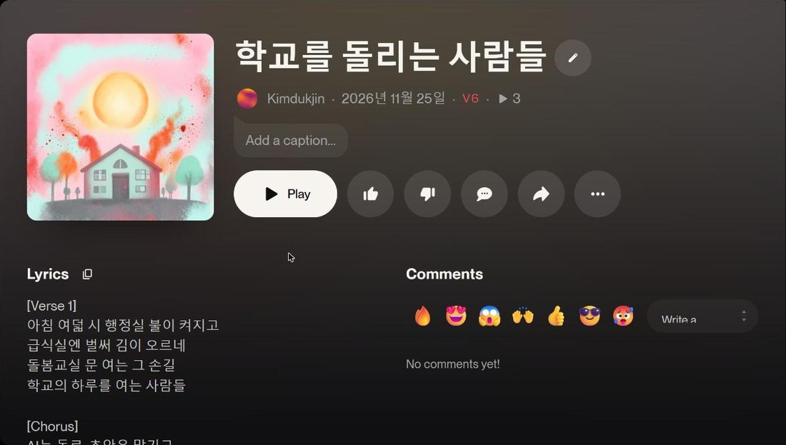
가사는 사람이, 곡은 AI가. 가사와 스타일 한 줄로 1분 30초 남짓한 노래가 나왔습니다.
수노 v6 · 2026년 11월 25일 강사 실행
안전하게
쓰기 전에 한 번, 내보내기 전에 한 번 멈춥니다.
13
내 챗GPT 설정 세 가지
어디서: 챗GPT 앱 → 왼쪽 위 메뉴 → 맨 아래 내 이름 · 한 번만 해 두면 됩니다
① 학습에 쓰지 않게
설정 → 기록 및 데이터 → '모두를 위한 모델 개선' 끄기
앱 버전에 따라 메뉴 이름이 '데이터 제어'일 수 있습니다.
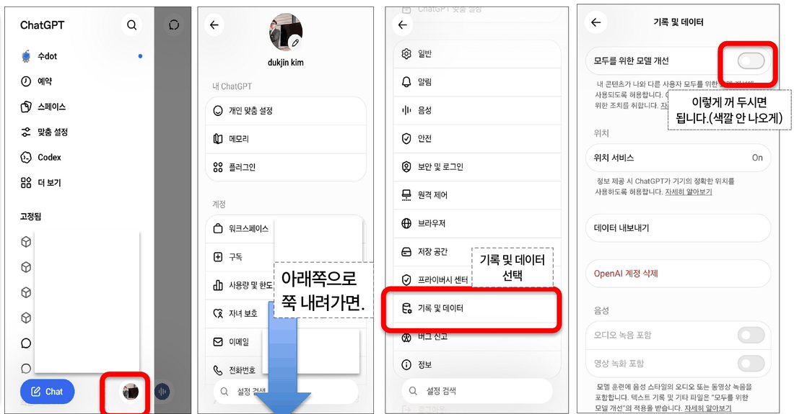
메뉴 → 내 이름 → 기록 및 데이터 → 맨 위 스위치 끄기② 메모리 확인
설정 → 메모리 → '메모리 요약' 열어 보기
AI가 나에 대해 기억하는 내용이 적혀 있습니다. 남기기 싫은 내용은 지우고, 필요하면 메모리를 끕니다.
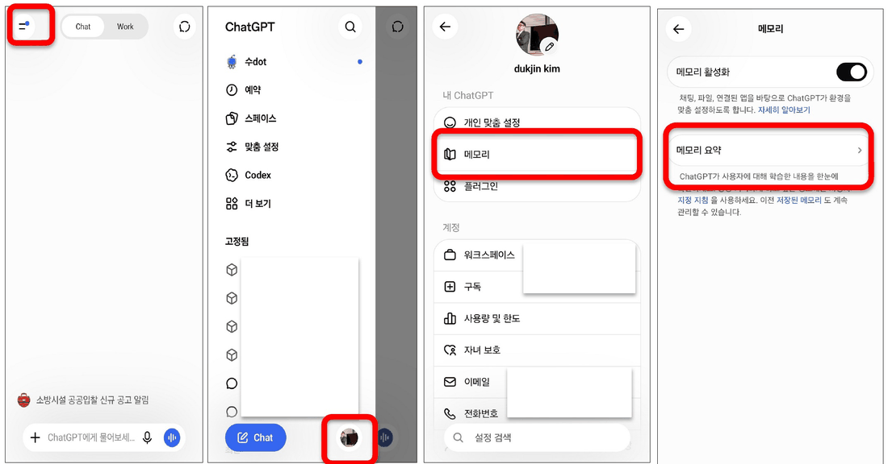
메뉴 → 내 이름 → 메모리 → 메모리 요약③ 임시 채팅
대화창 오른쪽 위 아이콘 → 임시 채팅
대화 목록과 메모리에 남지 않습니다. 다만 안전 확인용으로 최대 30일 보관될 수 있으니, 임시 채팅에도 주민번호·계좌 같은 개인정보는 넣지 않습니다.
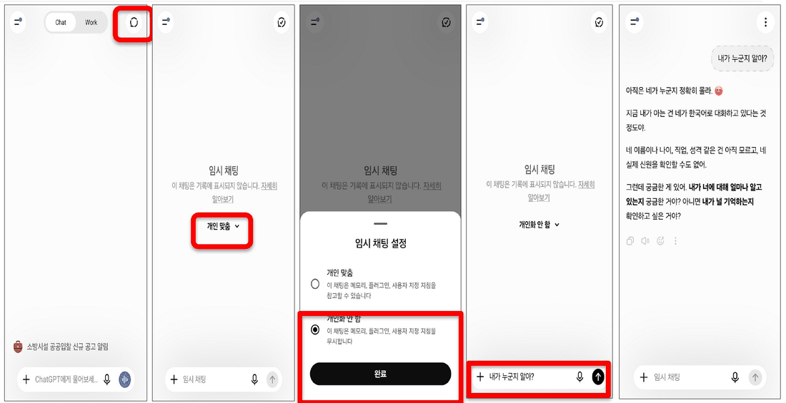
오른쪽 위 아이콘 → 임시 채팅하나 더: 사용자 지침 써 두기
프로필 → 개인 설정 → 개인 맞춤 설정. 한 번 써 두면 모든 대화에 적용됩니다.
해 볼 만한 놀이
네가 나에 대해 알고 있는 걸 바탕으로 동물을 한 마리 그려 주고, 왜 그렇게 그렸는지 설명해 줘.
나를 잘 아는 AI는 편합니다. 그만큼 내 정보가 쌓여 있다는 뜻이니 가끔 열어 보세요. 화면은 강사 계정(유료)이라 무료 계정은 메뉴 모양이 조금 다를 수 있습니다.
사람의 몫 네 가지
AI가 초안을 쓸수록 사람에게 남는 일은 더 또렷해집니다
사실 확인숫자 · 날짜 · 이름 · 출처를 원본과 맞춰 봅니다.
맥락 이해우리 학교 사정과 읽는 사람은 우리가 압니다. 말해 주지 않으면 AI는 모릅니다.
공감읽는 사람의 걱정을 떠올립니다. 빠진 당부를 되살리는 일입니다.
최종 판단보낼지 말지는 사람이 정합니다. 책임도 사람에게 남습니다.
AI는 동료입니다. 그런데 결재란에 이름을 쓰는 동료는 아닙니다.
교육현장에서 AI에 넣지 않는 다섯 가지
개인 계정의 AI에는 넣지 않습니다
이름과 연락처학생 · 보호자 · 동료의 이름, 전화번호, 주소.
번호주민등록번호, 계좌번호, 비밀번호, 인증번호.
아이의 기록성적, 상담 기록, 건강과 알레르기 정보.
얼굴과 목소리다른 사람이 나온 사진, 영상, 음성.
비공개 업무 자료공개되지 않은 문서와 내부 자료.
헷갈리면 넣지 않습니다. 꼭 필요하면 가명과 가상 정보로 바꾸고, 기관이 정한 도구와 지침을 따릅니다.
기본 습관 세 가지
틀린 답 · 치우친 답 · 남의 것을 조심합니다
틀린 답변그럴듯해도 원본과 맞춰 봅니다. "원문과 대조해서 다른 곳을 표로 보여 줘."
편향한쪽 말만 하지 않았는지 봅니다. "반대쪽 입장도 말해 봐."
저작권남의 글 · 그림 · 음악을 통째로 넣어 베끼지 않습니다. AI로 만든 것은 AI로 만들었다고 적어 둡니다.
세 가지 모두 답은 같습니다. 밖으로 나가기 전에 사람이 한 번 봅니다.
강의가 끝나도 이어집니다
매주 새 AI 소식을 받아 보는 두 가지 방법 · 둘 다 무료입니다
유튜브
김덕진의 뉴스덕
한 주의 AI · IT 뉴스를 쉽게 풀어 드립니다. 매주 월요일 밤 8시 라이브. 구독해 두면 알림이 옵니다.
뉴스덕 구독하기 ↗
카카오톡 오픈채팅
김덕진의 AI 큐레이션
챙겨 볼 만한 AI 소식을 골라 올려 드리는 방입니다. 궁금한 것을 물어보셔도 됩니다.
오픈채팅방 들어가기 ↗
오늘 이야기는 이 책에 들어 있습니다
『AI 2027 트렌드&활용백과』
김덕진 지음 · 스마트북스 · 11월 2일 출간. 앞쪽은 2027년 AI 트렌드 10가지, 뒤쪽은 AI 도구 50개를 직접 써 본 활용편입니다.
복사했어요. AI에 붙여 넣으세요